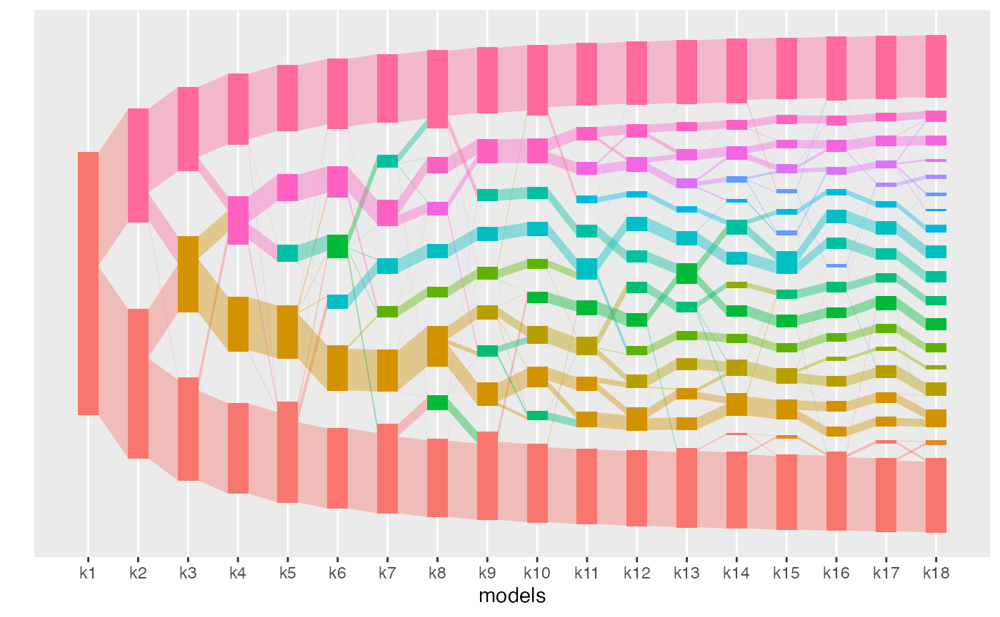

alto is an R package for aligning topics across a collection of LDA models. It provides functions to support the most common tasks in the analysis workflow,
-
run_lda_models()fits a collection of LDA models across resolution levels -
align_topics()aligns topics across a collection of LDA models -
topics()provides metrics of alignment quality -
plot()shows the flow of alignment weight across resolution levels -
plot_beta()shows the topics associated with each underlying model
Alignment can be used for (multiresolution) exploratory analysis. By highlighting topics that are robust across choices of K, it can also support evaluation of LDA models.

The figure above shows an example alignment between topic models. See the vignette “Using alto on vaginal microbiome data” to reproduce this figure.
Installation
You can install the development version from GitHub with:
# install.packages("devtools")
devtools::install_github("lasy/alto")Help
We welcome questions and comments about the package either through github or email.